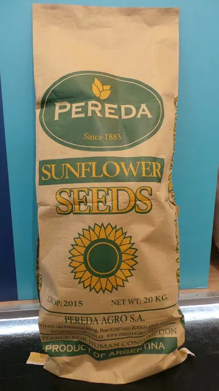

Productos / Girasol confitero
Productos
Girasol confitero.
Argentina está entre los principales productores del mundo, gracias a condiciones agroecológicas que dan alto rendimiento y calidad.

Ficha técnica
Características.
A diferencia del girasol aceitero, el confitero tiene una semilla de gran porte que se consume de forma directa. Por eso las buenas prácticas en el campo y en la planta son clave.
Es un producto natural, sabroso y rico en minerales y vitaminas: se consume como snack o como ingrediente de repostería. Se clasifica por diámetro: cuanto más grande el calibre, mayor su valor. Los grandes van a consumo humano y los chicos a alimento para mascotas.
- Presentación
Inshell (con cáscara)
- Packaging
- 5 kg
- 10 kg
- 20 kg
- 50 lbs
- Calibres
- 22/64 up · más de 8,73 mm
- 20/64 · 7,94 mm
- 16-18/64 · 6,35 mm
El calibre es el diámetro del grano, medido en 64avos de pulgada.
- Equivalencia
22/64 in = 8,73 mm
0,34 pulgadas.
Contacto
¿Necesitás girasol confitero?
Contanos el calibre, el packaging y el volumen, y armamos la propuesta.